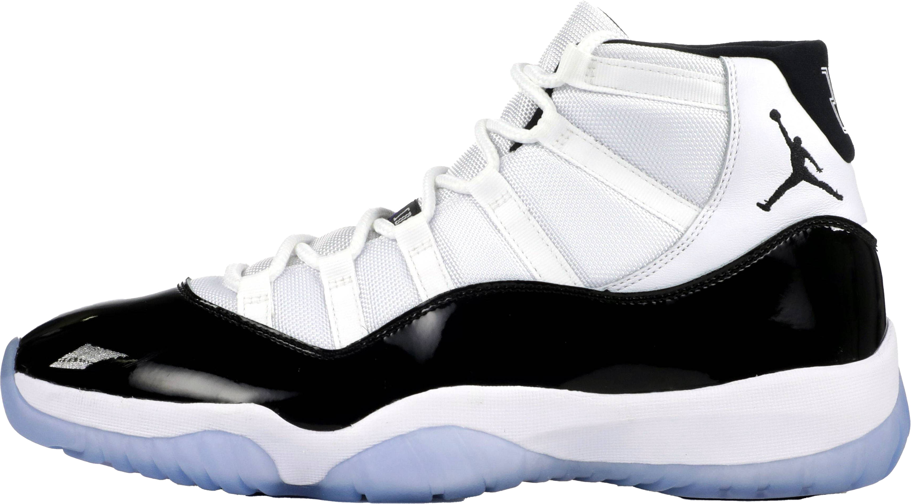

AIR JORDAN 11
DESIGNED BY TINKER HATFIELD, THE JORDAN 11 IS A SHOE KNOWN BY ALL SNEAKER FANS. ALONG WITH ITS UNIQUE SHAPE AND LOOK THAT, AT THE TIME, HAD NOT BEEN SEEN IN ANY OTHER SNEAKER BEFORE. IT IS MADE UP OF NYLON AND PATENT LEATHER, THE FIRST OF THE AIR JORDANS TO HAVE BOTH. THE JORDAN 11 IS KNOWN TO BE THE PERSONAL FAVORITE SHOE OF MICHAL JORDAN HIMSELF. THIS WAS ALSO THE SHOE MJ WORE ON COURT DURING THE CHICAGO BULLS’ HISTORIC 1995 SEASON, WHICH IS BELIEVED TO BE PART OF THE REASON THEY ARE SO POPULAR AMONGST COLLECTORS. THE JORDAN 11 IS STILL ONE OF THE MOST POPULAR AND SOUGHT AFTER SNEAKERS TODAY.
INITIAL RELEASE: 1995
RELEASES: 23
COLORWAY: RETRO CONCORD
CURRENT RESALE PRICE: $505 (GOAT)